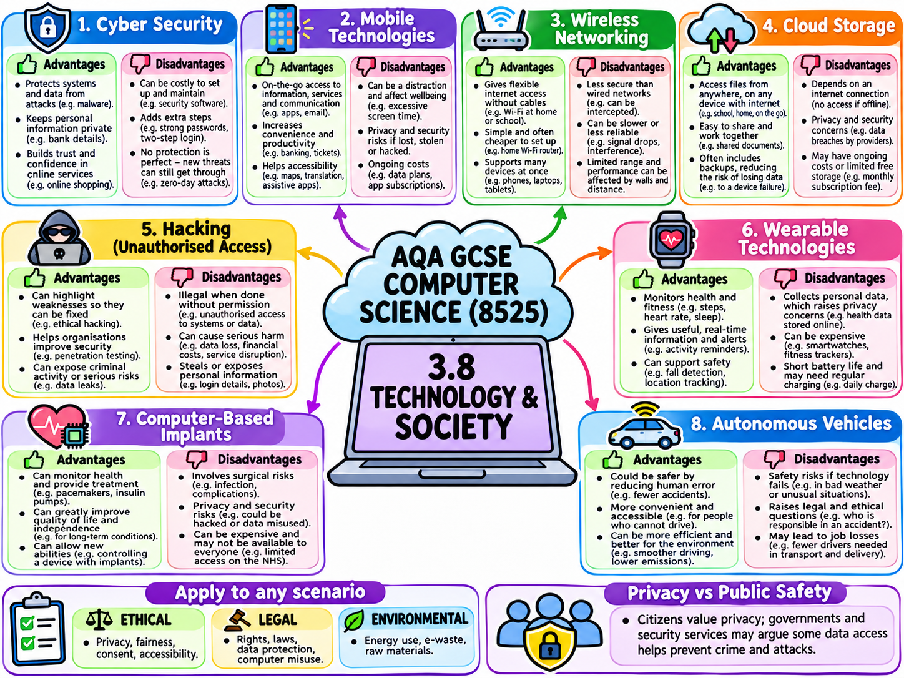
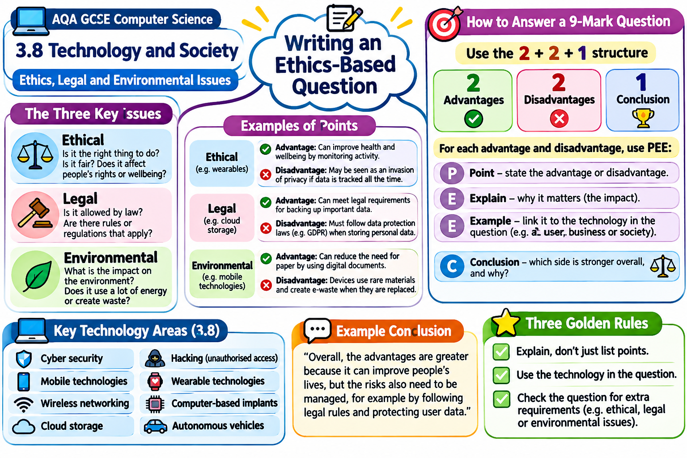

Programming · IDE
Python IDE
Your space to write, run and test Python programs freely. Explore your own ideas, experiment and fix errors.
Open Python IDELearn by doing. Choose a topic, try a challenge, test your understanding and improve your skills — at school or at home.
Five interactive resources. Select one to practise your skills.
Your space to write, run and test Python programs freely. Explore your own ideas, experiment and fix errors.
Open Python IDEWrite, complete and debug Python programs. Complete guided missions, check your code and tackle GCSE exam-style challenges.
Open Python TasksExplore database tables, write SQL queries and see how SELECT, UPDATE, INSERT and DELETE affect the data.
Open SQL Mission ControlPractise binary conversions and addition, experiment with bitmap images, explore digital sound and test compression skills.
Open Data RepresentationExperiment with logic gates, step through the CPU instruction cycle, investigate memory and compare software translators.
Open Computer SystemsNo matching activities. Try searching for “binary”, “Python”, “SQL” or “CPU”.
Revise the key knowledge on Quizlet or Knowt, then return to Mission Control to practise applying it.
Algorithmic thinking and problem-solving.
Open flashcards ↗Programming concepts, constructs and techniques.
Open flashcards ↗Binary, images, sound and compression.
Open flashcards ↗Hardware, software and computer architecture.
Open flashcards ↗Network types, topologies and protocols.
Open flashcards ↗Threats, vulnerabilities and security measures.
Open flashcards ↗Database terminology and SQL statements.
Open flashcards ↗Advantages, disadvantages and ethical, legal and environmental considerations across eight technology contexts.

Open ethics mind map ↗A structured reminder of ethical, legal and environmental points, with the 2 + 2 + 1 approach and PEE paragraphs.

Open 9-mark answer guide ↗Your starting point for interactive Computing practice. You can work through challenges in lessons or revisit them for independent revision.